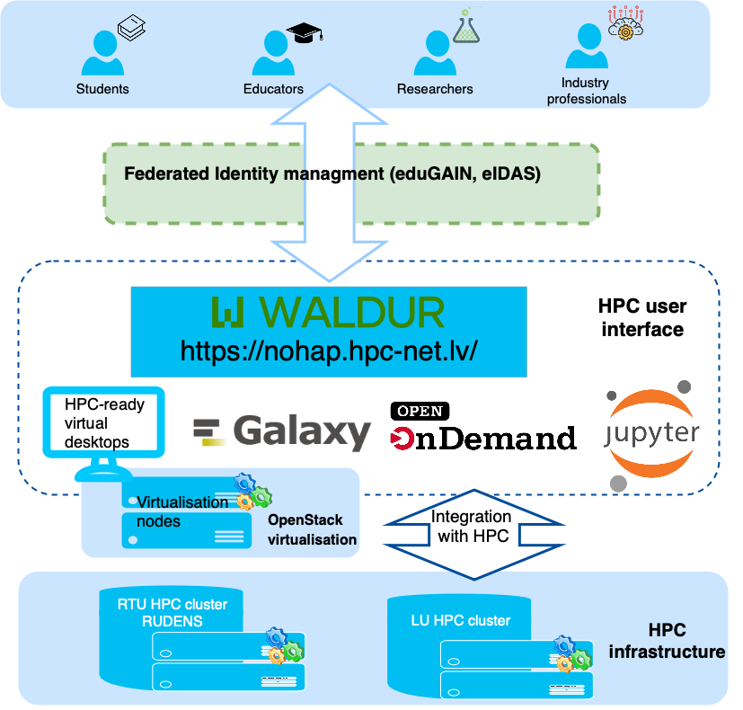

HPC Platform User Guide
This page provides instructions for using different tools and interfaces available through the High-performance Computing (HPC) platform.
The HPC platform provides students, educators, researchers, and industry professionals with a single point of access to virtual computing infrastructure to support learning and development of advanced digital skills in Latvia.
Functional layers of the HPC platform:
User Community
Different user groups are welcome: students, educators, researchers, and industry professionals. Users can access the platform 24/7 from anywhere.
Authentication
We aim to implement single sign-on for all services provided by the platform. Federated identity management via GEANT Edugain and National electronic IDs allows anyone from the EU access to the platform.
User interface
WALDUR plays a central role in this layer: a self-service portal for requesting and managing access to computing resources. The built-in Marketplace offers a catalog of HPC services provided by Latvian academic institutions.
The user interface layer provides a set of tools like Open OnDemand, HPC-ready virtual desktops for user-friendly access to HPC, as well as HPC-enabled thematic web portals (Galaxy, Jupyter Hub, Seqr, and others) for data analysis and visualization. Most of the tools are web-based, meaning that the interaction with the supercomputer is possible without leaving the web browser; nevertheless, traditional access through SSH is still available.
Integration with the e-learning environment. The project team has developed an HPC command-line tool for the Moodle e-learning environment, using the LTI (Learning Tools Interoperability) protocol.
Each of the elements of the user interface layer is explained in more detail in subsections of this documentation page.
Virtualization
Although technically part of the hardware stack, virtualization in the context of the HPC platform acts as a gateway by providing pre-configured virtual machines. These VMs simplify access by offering familiar software environments (e.g., MATLAB) that are pre-integrated with the supercomputer.
HPC hardware infrastructure
The hardware layer of the platform consists of HPC clusters (supercomputers) hosted by Latvian academic institutions, providing the core computing and storage resources of the platform.